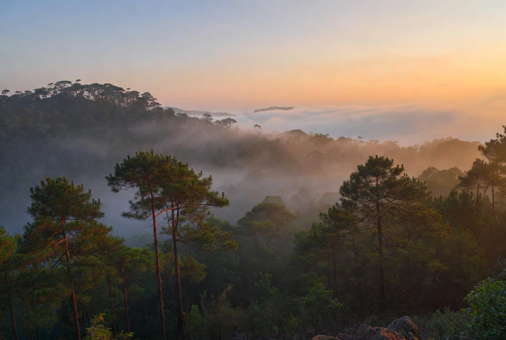
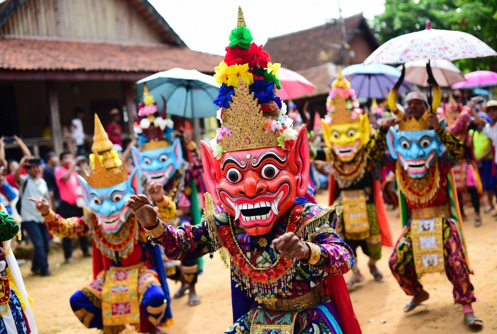
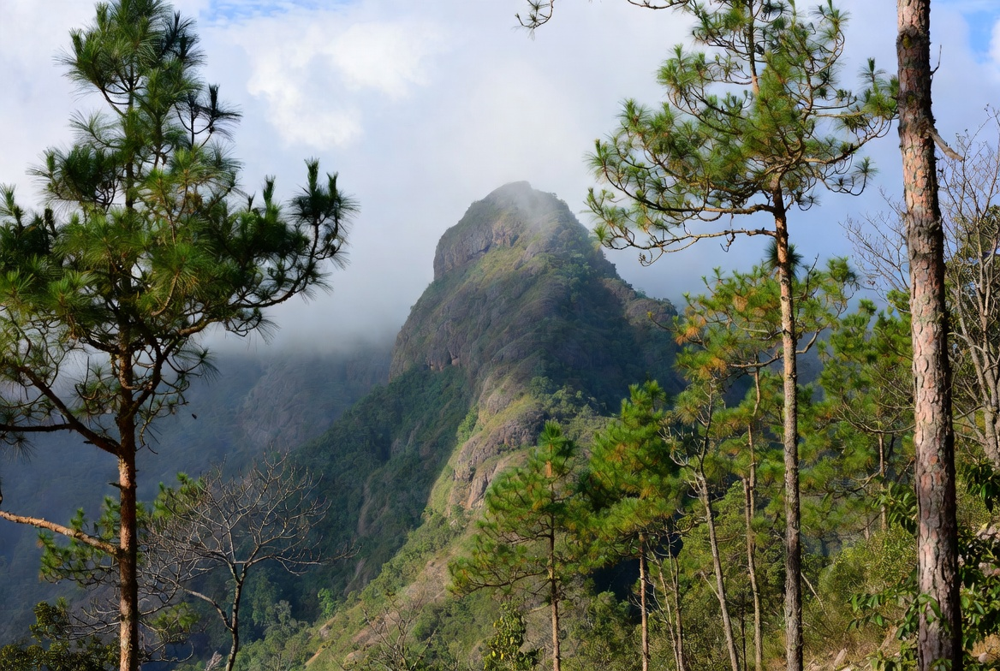
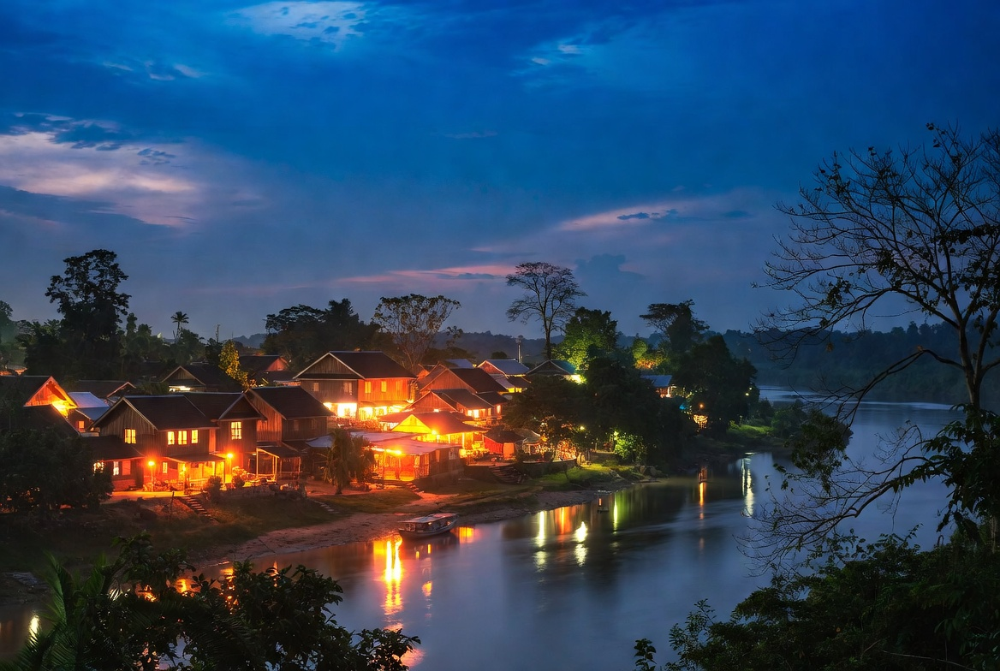

Loei Travel Guide
Loei is one of the most distinctive provinces in Isan. Sitting higher than most of the northeast, it feels cooler and greener, with pine forests, sandstone plateaus and some of the best hiking in the region. The province is best known for Phu Kradueng National Park, a long climb that rewards you with a high plateau and sea-of-mist views, and for the colourful Phi Ta Khon (Ghost Festival) in Dan Sai. Chiang Khan on the Mekong is also part of Loei and adds a riverside dimension. If you like nature, cooler temperatures and authentic local culture, Loei is one of the strongest reasons to head into this corner of Thailand.

How to Get There
By plane
Loei Airport has daily flights from Bangkok’s Don Mueang with Nok Air and Thai AirAsia. Flight time is about 1 hour 10 minutes. This is the most convenient option.
By bus
Regular buses leave from Bangkok’s Mo Chit Bus Terminal. Journey time is roughly 7–9 hours. Overnight services are available and drop you in Loei city in the morning.
There is no train service to Loei. Once you arrive, the city itself is small. For the national parks and Chiang Khan you will need a bus, songthaew, rented motorbike or private driver.

Climate & Best Time to Visit
Loei is noticeably cooler than the rest of Isan, especially at higher elevations.
Best time: November to February
Cool, dry and ideal for hiking. Nights on Phu Kradueng can feel genuinely chilly. This is the most comfortable and popular period.
Hot season: March and April
Still warmer than the cool months, but more pleasant than the lowlands of Isan. Heather flowers bloom on Phu Kradueng around this time.
Rainy season: May to October
Heavier rain and more cloud. Some trails can be slippery and Phu Kradueng is often closed or restricted during the wettest months for safety.

What You’ll Love Doing Here
The big draw for most visitors is Phu Kradueng National Park. The hike to the summit plateau is long (around 9 km uphill) but well-maintained, with rest stops along the way. Once on top you find a large flat area of pine forest, cliff viewpoints, waterfalls and a sea of mist on clear mornings. Many people stay overnight in the park’s basic accommodation or camping areas. It is one of the classic Thai mountain experiences.
Phu Ruea National Park is a good alternative or addition — cooler, easier to access by road in places, and usually quieter. Both parks give you a taste of highland Thailand that feels very different from the rest of Isan.

The Phi Ta Khon Festival in Dan Sai (usually late June or early July) is the cultural highlight of the year. Locals wear elaborate handmade masks and colourful costumes and parade through the streets in a lively mix of Buddhist and animist tradition. It is noisy, photogenic and genuinely local.
Chiang Khan, already covered as a separate destination, is an easy side trip from Loei city and adds riverside walks and the famous Walking Street. The province as a whole rewards slower travel — good food, cooler air, and a strong sense of place.
Evenings in Loei city are low-key. Markets and simple restaurants provide the main entertainment after a day in the mountains.
Pros and Cons
What people love
- Phu Kradueng is one of Thailand’s best and most rewarding hikes
- Cooler climate than most of Isan
- Unique Phi Ta Khon Festival
- Beautiful highland scenery and pine forests
- Authentic, relatively uncrowded atmosphere outside peak festival and holiday periods
What can frustrate people
- Phu Kradueng is a long, steep climb and requires fitness and preparation
- Limited public transport to the parks — private transport is almost essential
- Park can be crowded on Thai public holidays and long weekends
- Rainy season restricts access and can close trails
- The city of Loei itself has few major attractions
Why Go
Loei is for travellers who want mountains, cooler air and a strong dose of local culture rather than temples and beaches. Hike Phu Kradueng if you are up for the challenge, visit Phu Ruea for something quieter, time a trip for the Phi Ta Khon Festival if you can, and use Chiang Khan for a relaxed riverside interlude. The province feels different from the rest of Isan — greener, higher and more open. Come prepared for the hills and you will leave with some of the best outdoor memories of a trip to the northeast.